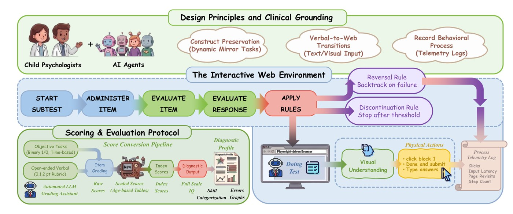
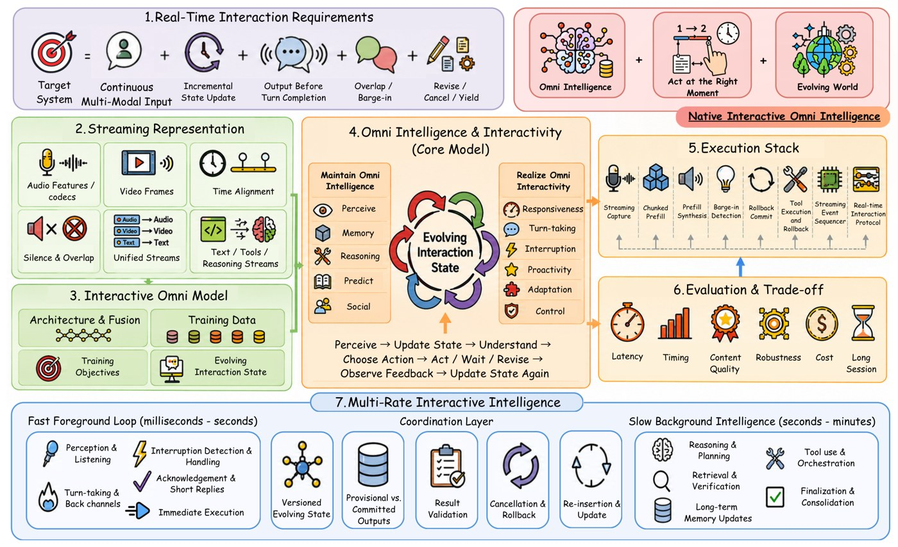
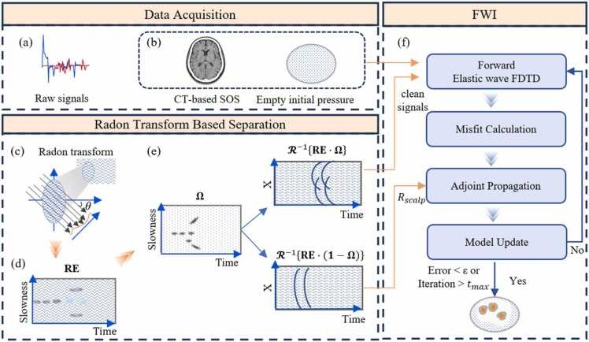

About Me
😜 Hi, I am Cecilia! I am a third-year M.S. student in Electronic Information at the Peking University National Biomedical Imaging Center, and currently a visiting researcher in the Rehg Lab at the University of Illinois Urbana-Champaign, advised by Prof. Jim Rehg and Prof. Ismini Lourentzou. Before that, I received my B.Eng. in Computer Science from Lanzhou University, ranking 1st of 168.
My research asks how machines can understand and anticipate human behavior from what they see. Recently I have been building world models of human gaze in video, and evaluating whether AI agents can faithfully simulate human cognition at different developmental ages. I have also worked on post-training multimodal LLMs with agentic reinforcement learning at Tencent, and on physics-constrained inverse problems for transcranial photoacoustic imaging. I believe advances in technology should help people pay closer attention to their own lives, and I hope my research can help more people better understand themselves and make everyday life easier.
News
- Gaze World Model submitted to CVPR 2027.
- ChildAgentEval (co-first author) submitted to EACL 2027.
- Our survey Native Real-Time Interactive Omni Intelligence is released.
- ChildAgentEval preprint released on arXiv.
- Radon–FWI for transcranial photoacoustic tomography published in Photoacoustics.
- Joined the Rehg Lab at UIUC as a visiting researcher, working with Prof. Jim Rehg.
- Started a research internship at PediaMed AI, working on ChildAgentEval with Prof. Ismini Lourentzou (UIUC).
- Started a research internship on multimodal large models at Tencent.
- Received the Peking University Social Scholarship.
- Started my M.S. in Electronic Information at Peking University.
- Graduated from Lanzhou University with a B.Eng. in Computer Science, where I did research in the UAIS Lab (Ubiquitous Awareness and Intelligent Solutions Lab).
- Received the National Scholarship from the Ministry of Education of China.
Publications



* Equal contribution † Corresponding author
Research Experience
- Led the Gaze World Model project: frozen V-JEPA 2.1 encoder, RoPE scene–head cross-attention, 3D-RoPE temporal trunk and a latent world predictor trained with a motion-weighted latent prediction loss.
- Built a human-in-the-loop annotation engine that turned frame-level labels in VideoAttentionTarget and ChildPlay into 6,204 event-level gaze shifts.
- The 105M ViT-B variant beats the 1.7B PaGE ViT-H+ on every shift metric; future gaze L2 0.123 → 0.104.
- Formulated transcranial photoacoustic tomography as a PDE-constrained nonlinear inverse problem and developed Radon–FWI (8th-order staggered-grid FDTD, adjoint gradients, FISTA with restart).
- Proposed UMI-PAI, measurement-based ultrasound–photoacoustic aberration correction validated on acrylic phantoms and murine skulls.
Industry Experience
- Built ChildAgentEval, an interactive benchmark for the cognitive age alignment of multimodal LLM agents across psychometrically grounded domains.
- Proposed two-stage skill-guided distillation that turns child developmental markers into executable constraints on agent language, memory and task-solving behavior.
- Formulated adversarial web risk assessment as multi-turn evidence gathering, where a multimodal agent actively queries 19 visual, structural and behavioral tools before reaching a grounded verdict, improving accuracy from 68.6% to 88.4%.
- Studied how to transfer agentic reasoning from a 397B teacher to a 4B student, combining filtered trajectory SFT that upweights the student’s blind spots with on-policy distillation under token-level reverse KL (Macro-F1 33.8 → 53.5).
- Explored process-level rewards for agentic RL, using GRPO with trajectory-level credit assignment to the first decisive piece of evidence, which further improved Macro-F1 to 56.5 and cut inference time by 82%.
Education
Honors & Awards
- 2025Peking University Social Scholarship · Peking University
- 2023National Scholarship · Ministry of Education of China
- 2023Finalist, Mathematical Contest in Modeling (MCM)
- 2022National Encouragement Scholarship · Ministry of Education of China
- 2021National Scholarship · Ministry of Education of China
- 2021Outstanding Student Model · Lanzhou University
Leadership
- 2024–Organization Commissary, School of Software and Microelectronics, Peking University
- 2022Deputy Class Advisor, Computer Science Cohort 2022, Lanzhou University
- 2021President, Student Association Management Center, Lanzhou University
Beyond Research
Outside the lab, I am a big fan of 🎬 movies and ✈️ traveling. I love meeting new people on the road and in youth hostels, and many of them have become close friends. So far I have traveled to more than 50 cities across China. Here are some of the places I have been: